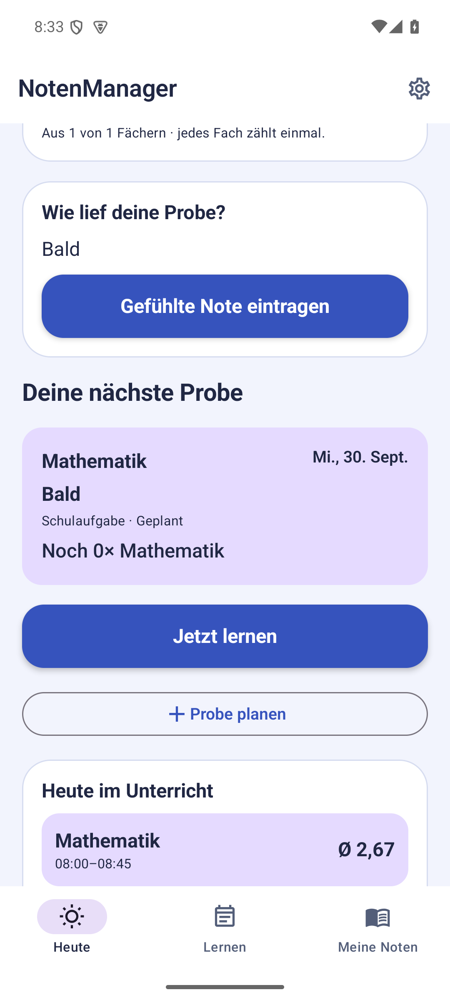
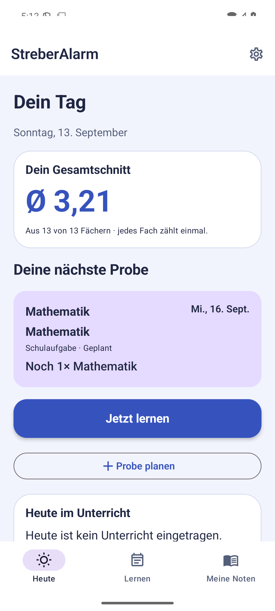
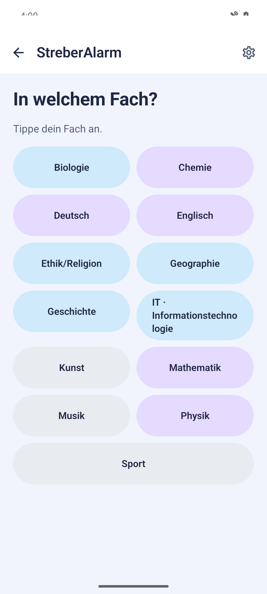
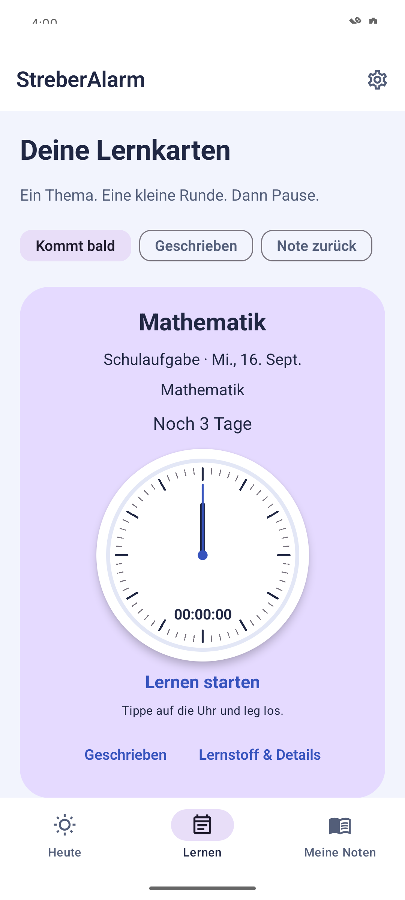
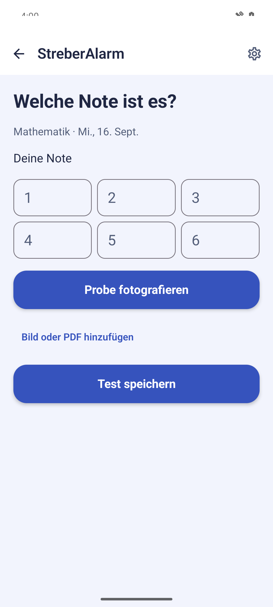
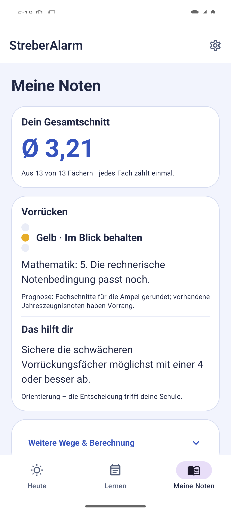
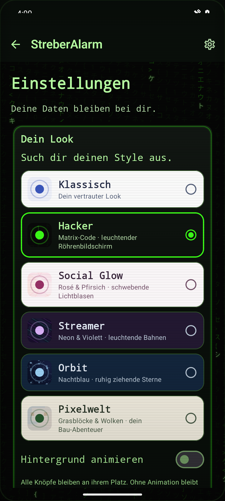
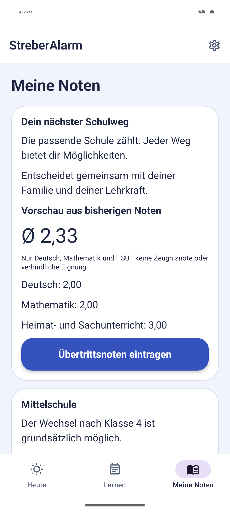

EIN PRIVATES HOBBYPROJEKT
Für den Alltag gemacht.
NotenManager ist ein persönliches Projekt für Android und iPhone und wird nach und nach verbessert. Die Store-Versionen können zu unterschiedlichen Zeiten aktualisiert werden.
Projekt auf GitHub ↗ANDROID & IPHONE · IN DEN STORES
Noten und Prüfungen im Blick – auf Android und iPhone.
Die neuere Android-Version ordnet Heute, Meine Noten und Lernen; dort gibt es auch eigene Vokabelsets und Lernkarten.
Ein privates Hobbyprojekt. Neue Funktionen erscheinen nach Freigabe durch Google Play. Die Store-Versionen können sich unterscheiden.

SCHRITT FÜR SCHRITT
Sieh dir die sieben Kapitel der früheren StreberAlarm-Version an. Die Aufnahmen haben deutsche Erklärungen und Untertitel.
Historische Aufnahme: Die aktuelle Android-App hat andere Ansichten. Der Lerntimer und die Eingabe geschätzter Noten aus dem Video sind dort nicht mehr aktiv. Auf dem iPhone bleiben die bisherigen Ansichten eigenständig.
Das Video wird erst beim Abspielen geladen.
FRÜHERE APP-VERSION
Die folgenden Kapitel und Bildschirmaufnahmen zeigen ältere Abläufe. Heute hat Android die Bereiche Heute, Meine Noten und Lernen; ältere Timer- und Einschätzungsansichten sind dort nicht mehr aktiv.
01 / Dein Tag
Dieses Kapitel zeigt die frühere Startseite mit Gesamtschnitt, nächster Probe und großer Lernuhr. Die aktuelle Android-Navigation und der frühere Lerntimer sehen anders aus beziehungsweise sind nicht mehr aktiv.
Deutsch · mit Untertiteln

02 / Eine Probe planen
In der früheren Version wurde eine Probe über Fach und Datum geplant und der Lernstoff an der Lernkarte ergänzt. Die Aufnahme zeigt den damaligen Ablauf; aktuelle Formulare können abweichen.
Deutsch · mit Untertiteln

03 / Lernen mit einem Klick
Hier ist der frühere Lerntimer mit gesammelten Lernphasen zu sehen. In der aktuellen Android-Oberfläche ist diese Timeransicht nicht mehr aktiv; unter Lernen findest du Prüfungen sowie eigene Vokabelsets und Lernkarten.
Deutsch · mit Untertiteln

04 / Note und Arbeit festhalten
Das Video zeigt die frühere Eingabe einer geschriebenen Probe mit Scanner und geschätzter Note. Die aktuelle Android-App erfasst Noten und Anhänge in einem kompakten Formular; geschätzte Noten werden dort nicht mehr eingegeben.
Deutsch · mit Untertiteln

05 / Noten und Stundenplan
Die Aufnahme zeigt die damalige Notenübersicht mit Vorrückungsampel, Notenzielen und Stundenplan. Heutige Android-Ansichten sind vereinfacht; die Schule entscheidet weiterhin über Zeugnis und Vorrücken.
Deutsch · mit Untertiteln

06 / Dein Look und deine Daten
Dieses Kapitel zeigt frühere Einstellungen, Looks und die passwortgeschützte Datensicherung. Die Bildschirmaufnahmen stammen aus der alten StreberAlarm-Version; Aussehen und Wege können heute abweichen.
Deutsch · mit Untertiteln

07 / Der nächste Schulweg
Die frühere Übertrittsansicht für die bayerische Grundschule wird im Video erklärt. Einzelnoten sind nur eine Orientierung; offizielles Zeugnis und schulische Entscheidung bleiben getrennt.
Deutsch · mit Untertiteln

EIN PRIVATES HOBBYPROJEKT
NotenManager ist ein persönliches Projekt für Android und iPhone und wird nach und nach verbessert. Die Store-Versionen können zu unterschiedlichen Zeiten aktualisiert werden.
Projekt auf GitHub ↗DEINE DATEN, VERSTÄNDLICH ERKLÄRT
Noten, Stundenplan und gespeicherte Lerndaten bleiben auf deinem Gerät. Beim lokalen Scanner werden keine Dokumentbilder an einen Dienst übertragen. Den optionalen Google-Scanner auf Android startest du erst nach dem Datenschutzhinweis.
Datenschutzhinweise lesen ↗Entdecke die App in deinem Tempo.